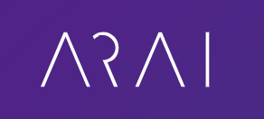
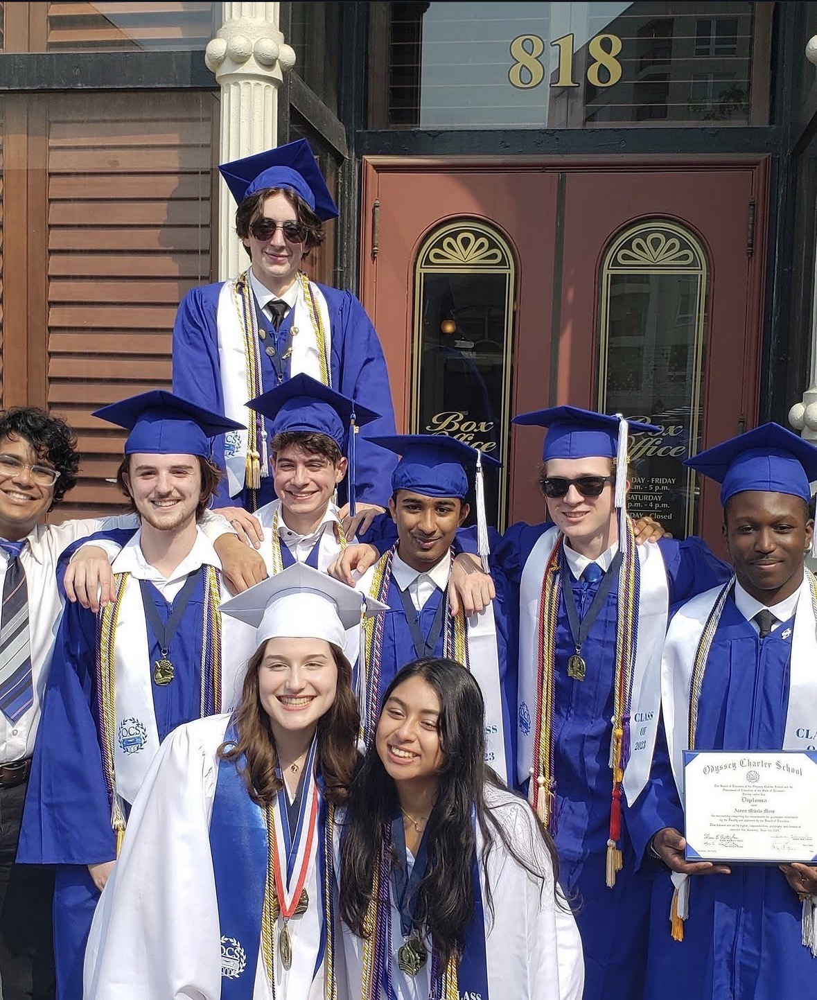
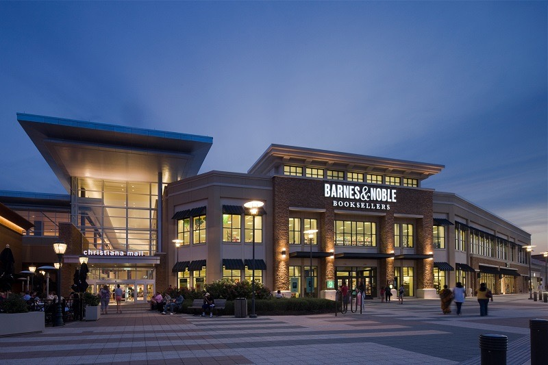
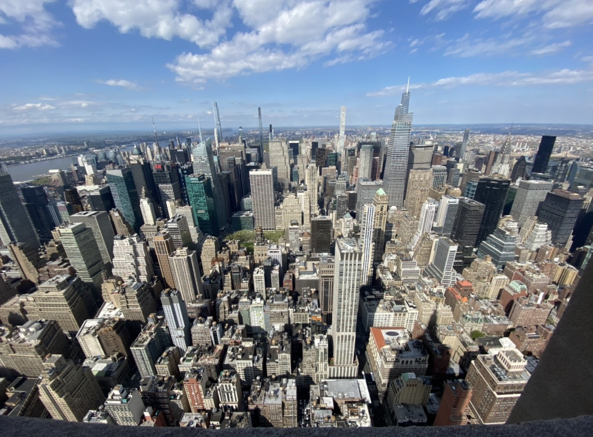
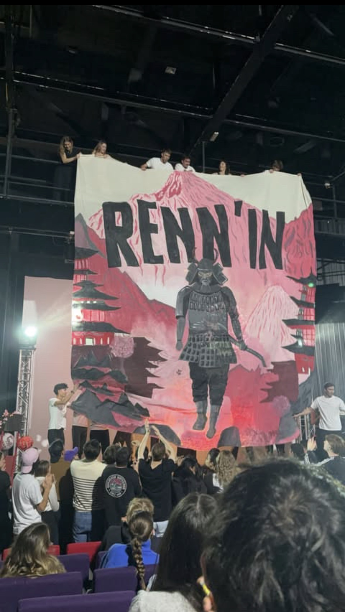
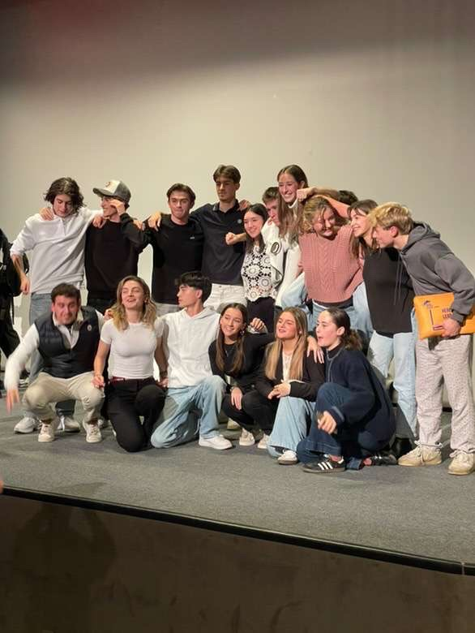
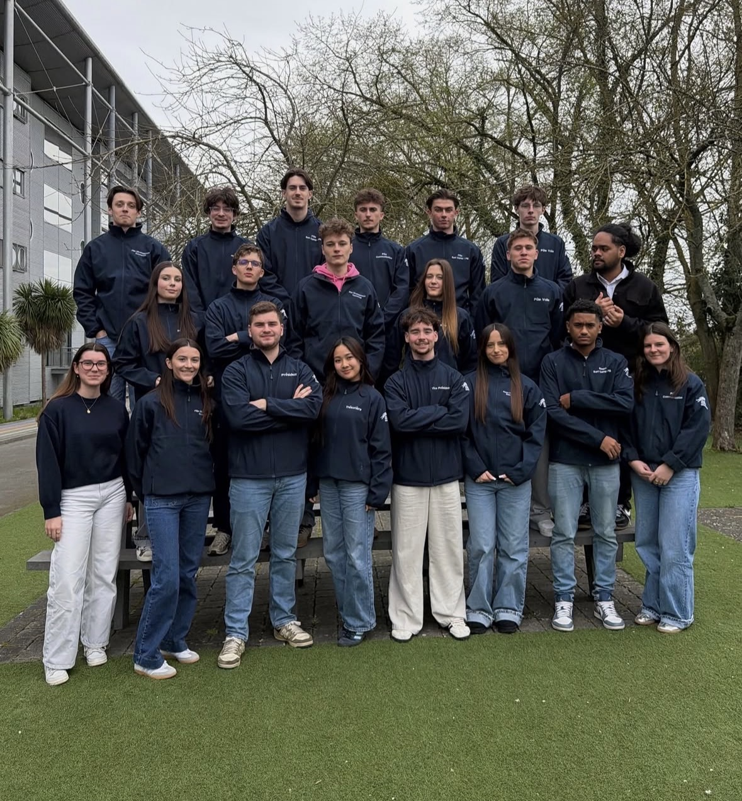

Thomas : Objectif Kaviar

Étudiant en Bachelor (English Track) à Rennes SB, prêt à s'investir pour Kaviar Tech.
Étudiant en Bachelor (English Track) à Rennes SB, prêt à s'investir pour Kaviar Tech.
Passionné par les nouvelles technologies, j’utilise déjà plusieurs outils d’IA régulièrement (notamment pour m’aider à mettre en forme ce site web). C’est un atout que je veux mettre au service de votre marketing pour créer du contenu percutant (vidéos, posts etc..) qui parle vraiment aux clients.
Côté commerce, je suis très à l’aise à l’oral et j’aime le contact client. Mon expérience au sein du pôle développement commercial de l'association Océania m'a permis de progresser en négociation et relation client. Prospecter, qualifier des leads ou faire des démonstrations en salon ne me fait pas peur. Au contraire, c’est pour moi un vrai moteur.
Mon expérience de président du Bureau de Vie Étudiante m'a également appris à être avenant, autonome et prêt à m'investisr. C'est pourquoi je pense pouvoir être un vrai atout pour votre entreprise. Ma soif de réussite et de vendre est selon moi une qualité majeure que je saurais mettre à profit.
Retrouvez mes engagements associatifs :

J’ai pu m’informer sur ARAI, son fonctionnement et même le tester à travers le site, notre rendez-vous m’a également beaucoup appris sur ce produit et c’est pourquoi j’ai établi les stratégies suivantes pour son développement dans le cadre d’un stage :
En savoir plus :
J’ai eu l’occasion durant mon rendez-vous de voir PoesiAR en action de mes propres yeux, ce qui m’a conforté dans l’idée que c’est un outil au potentiel infini. La démonstration à laquelle j’ai assistée m’a déjà donné des idées et pistes pour créer une stratégie :
En savoir plus :
Je tenais également à vous partager diverses photos en rapport avec mes expériences passées afin de mieux visualiser mon parcours et qui je suis.






📧 thomas.herberts@rennes-sb.com
📞 +33 7 62 96 72 07
Rennes / Brest | 2ème année de Bachelor (English Track)